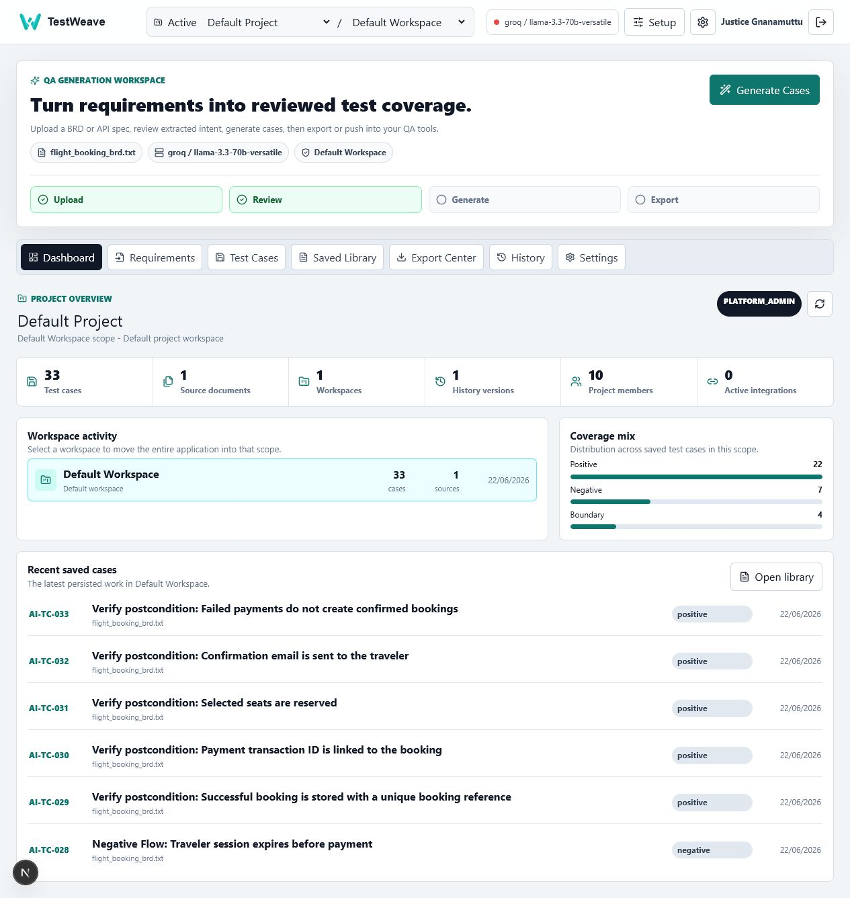
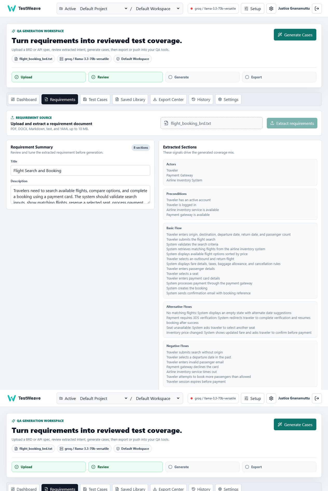
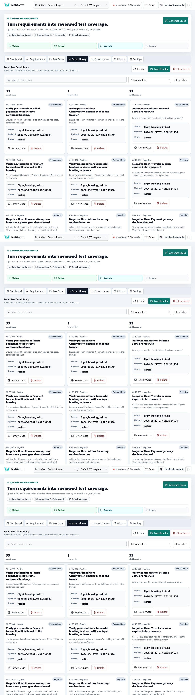
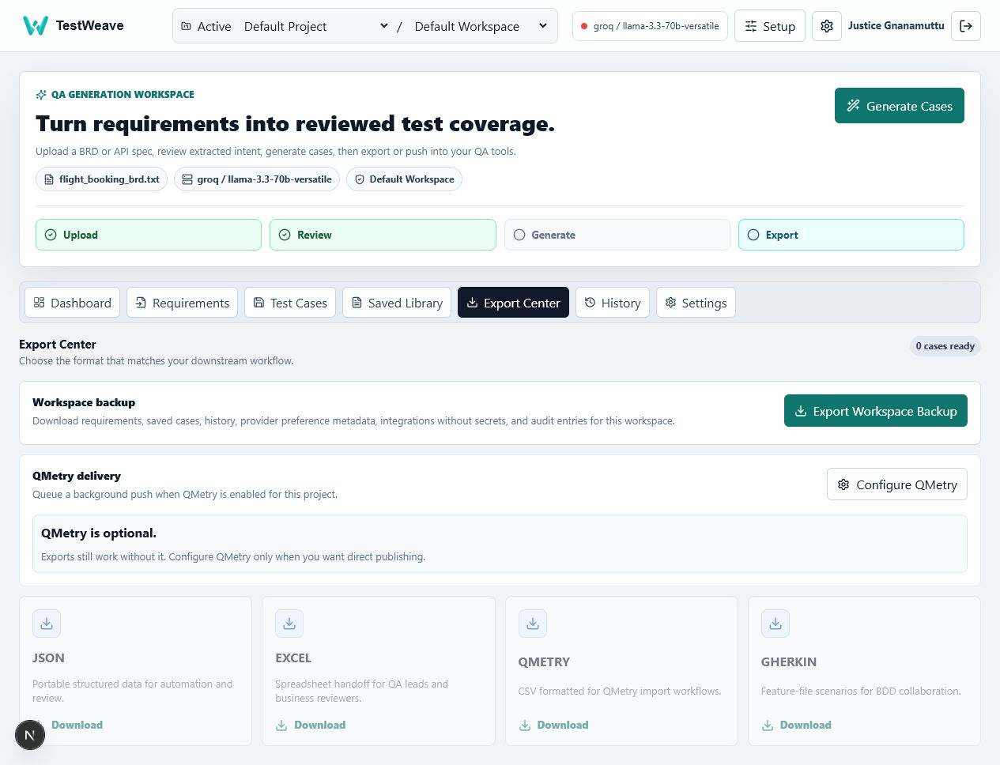

Back to portfolio
Next.jsprimary web client
FastAPIauthorized API boundary
SQLite/Postgresscoped persistence
QMetry/Jiradelivery integrations
AI-assisted test design platform
TestWeave
A FastAPI and Next.js application that turns requirement documents into reviewed, versioned, workspace-based test coverage with exports and delivery integrations.

Problem
AI-generated test cases need governance, context, and handoff paths.
My original LLM_TCG prototype solved the first draft problem. TestWeave expands that idea into an application workflow where teams can authenticate, choose a workspace, extract requirements, review generated coverage, save versions, compare history, and export into real QA delivery channels.
What the application solves
- Moves generation from one-off prompt output into a scoped project and workspace model.
- Accepts DOCX, PDF, TXT, YAML, and YML sources with upload validation and parser limits.
- Combines deterministic coverage with selectable Ollama or Groq generation.
- Preserves extracted requirements, saved cases, version history, and audit events.
- Exports to JSON, XLSX, QMetry CSV, Gherkin feature content, and workspace backups.
Case-study snapshot
Why this matters for test design teams.
TestWeave focuses on the part that usually gets skipped in AI demos: governance after the first generated draft. It adds authorization, workspace-level data, reviewable outputs, operational scripts, and integration readiness around the test generation workflow.
Product architecture
Splits the system into a Next.js frontend, FastAPI backend, SQLAlchemy persistence layer, Alembic migrations, integration worker, and a legacy Streamlit compatibility client.
Governed AI workflow
Supports provider health, user or workspace provider preferences, deterministic fallback, normalized generated cases, and tester review before save or export.
Team QA concerns
Includes platform admin, project admin, editor, and viewer roles; encrypted provider and integration secrets; audit logs; and project/workspace isolation.
Delivery handoff
Gives teams export and integration paths through Excel, JSON, QMetry CSV, Gherkin feature files, workspace backups, QMetry jobs, and Jira configuration.
Feature depth
From requirement intake to durable coverage assets.
Guided workspace onboarding
Users select or create a workspace, configure an LLM provider, optionally prepare integrations, and resume their most recent project/workspace context.
Safe document extraction
Upload handling validates extensions and MIME types, limits file size and parser work, deletes temporary originals after extraction, and stores normalized requirement JSON.
Reviewable generation
Generated cases include IDs, titles, descriptions, preconditions, steps, expected results, type, and coverage category, with edit and save flows before handoff.
Saved library and history
Saved cases can be searched and filtered by source, while history versions can be listed, compared, restored, or deleted based on role and workspace scope.
Integration controls
QMetry and Jira settings are project-scoped, role-aware, encrypted, and guarded by outbound URL safety checks before background delivery jobs run.
Operational hardening
Development seeding is explicit, production requires strong auth and encryption keys, migrations protect legacy data, and local backup/restore scripts support recovery.
Product view
Demo screens from the refactored application.
These screens were captured from the local seeded demo workspace and show synthetic flight-booking requirements, generated coverage, and export paths.
Workspace dashboard
Project and workspace context, provider status, coverage mix, recent saved cases, source document counts, and role-aware navigation.

Requirement review
Document upload, extracted title and description, actors, flows, alternative paths, negative paths, postconditions, and business benefits.

Saved library
SQLite-backed saved test cases with search, source filtering, coverage categories, ownership metadata, review actions, and delete controls.

Export center
Workspace backup, optional QMetry delivery, and handoff formats for JSON, Excel, QMetry CSV, and Gherkin feature scenarios.
Architecture
Next.js interface, FastAPI services, scoped storage, and worker-based integrations.
The refactor separates UI, API, domain services, provider adapters, exporters, integrations, and persistence so the test-generation workflow can grow beyond a local prototype.
Next.js frontend
Workspace shell, review UI, dashboard, library, exports.
Workspace shell, review UI, dashboard, library, exports.
->
FastAPI backend
Authentication, scoped routes, upload, generation, export.
Authentication, scoped routes, upload, generation, export.
Core services
Parsers, generators, history, dashboard, integrations.
Parsers, generators, history, dashboard, integrations.
->
Storage
SQLAlchemy models, Alembic migrations, SQLite/Postgres.
SQLAlchemy models, Alembic migrations, SQLite/Postgres.
LLM providers
Ollama, Groq, deterministic fallback.
Ollama, Groq, deterministic fallback.
->
Delivery
JSON, XLSX, QMetry CSV, Gherkin, QMetry jobs.
JSON, XLSX, QMetry CSV, Gherkin, QMetry jobs.
Setup and use
- Install Python backend dependencies and Next.js frontend packages.
- Start the development stack with the project script and explicitly seed demo users.
- Log in, choose the active project and workspace, and confirm provider settings.
- Upload a supported requirement document or API specification.
- Review the extracted requirement summary, generate cases, edit results, and save coverage.
- Export artifacts, download a workspace backup, or queue QMetry delivery when configured.
Tech stack
This page avoids exposing source code, secrets, production credentials, uploaded customer files, integration tokens, local databases, or private requirements.